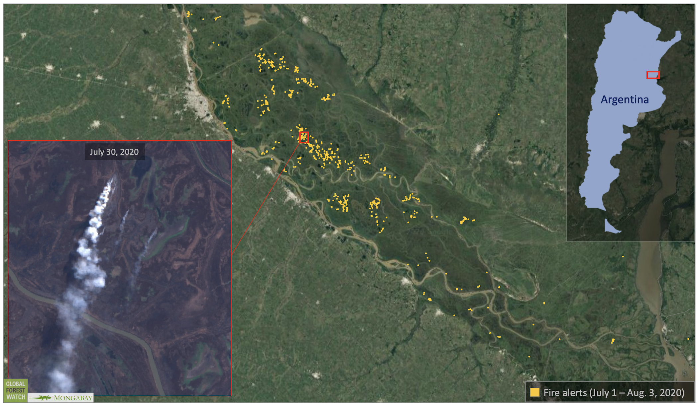
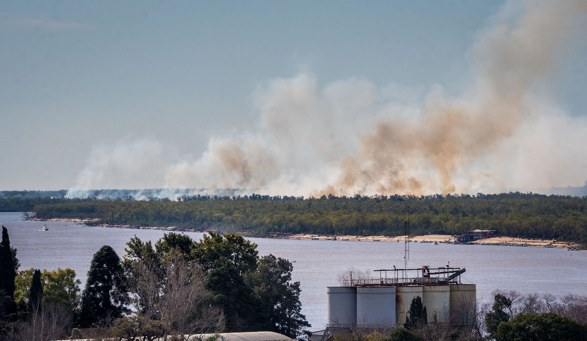
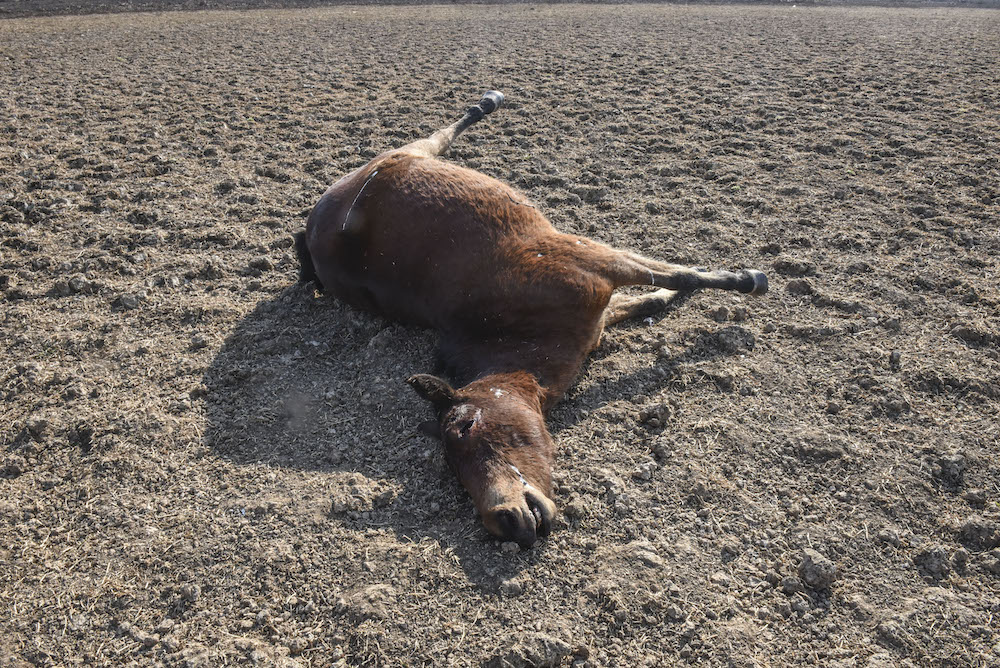

Hundreds of fires are currently burning through the Paraná Delta region,
an important wetland ecosystem that hosts a range of wildlife in Argentina,
raising concerns among conservationists.
The Paraná River is also experiencing extremely low water levels due to a regional drought,
although experts say an exact climatic reason for the drought has yet to be determined.
Experts say most of the fires have been deliberately lit by people,
but they are now raging “out of control” due to drought, lack of rainfall and low river levels.
Argentina’s Paraná Delta is on fire, and conservationists are sounding the alarm,
warning that this major ecosystem could be devastated beyond repair.
The delta system, which spans 19,300 square kilometers (7,450 square miles) in eastern Argentina,
is an intricate network of islands, streams, lagoons, marshlands, grasslands and forests,
that crisscross the Paraná River, the second-largest river in South America. The region,
which runs through Argentina’s Entre Rios province, hosts an abundance of
wildlife species,
including 50 mammals, 260 birds, 200 fish, 37 reptiles and 27 amphibians.
The Paraná Delta also plays an important role in regulating water and sequestering carbon, according to
experts.
While scientists believe that fire has occurred naturally in the Paraná Delta in the past,
most fires in the region are deliberately ignited by people. This year is no exception.
“The burning of herbaceous wetlands is a usual management practice in the Paraná River
floodplain and in the Delta,” Patricia Kandus, an ecologist and professor at the
Universidad Nacional de San Martín in Buenos Aires, told Mongabay in an emailed statement.
“However, burning practices are not allowed without permissions and most intentional
fires are usually not declared by the farmers.”

Satellite data show heavy fire activity in Argentina’s Paraná Delta.
Source: NASA VIIRS visualized on Global Forest Watch.
In recent months, the fires have gotten “quite out of control” due to unusually high temperatures,
regional drought conditions and the lack of rainfall, Kandus said.
“[There’s] a risk of devastation of the ecosystems, exceeding any level of resilience
that native species may present,”
she said
in a statement originally published in Spanish.
Satellites from the U.S. space agency NASA detected more than 10,000 fire alerts between
in 2020 in Entre Rios, the vast majority of which occurred in June and July.
This number is considered exceptionally high compared to the same period in years past.
“The number of potential fire hotspots accumulated this year far exceeds the number of hotspots
detected during the first [halves] of the last nine years,” Leonel Mingo, a campaigner
at Greenpeace Argentina, told Mongabay in an email.
This week, Greenpeace Argentina also released an
image
from a NASA satellite that shows plumes of smoke billowing across the country,
all the way to Buenos Aires, raising concerns for human health.
“The arrival of the smoke in Buenos Aires does nothing more than expose the dimension
of the serious environmental problem that is occurring in the Paraná Delta,”
Mingo said in a statement in Spanish. “So far this year there have been
approximately 12,000 outbreaks of fires, and only 7,000 in July.
This delta is a large system of wetlands and it is clear that these ecosystems urgently
need protection as they are seriously threatened by the agricultural and real estate industry.”

Fires release plumes of heavy smoke in the Paraná Delta.
Greenpeace calls for the urgent sanction of a Wetlands law and a moratorium
that prohibits activities on Wetlands until the law is passed.
Image by Greenpeace Argentina.
To make matters worse, the Paraná Delta region has experienced some of the lowest water levels
in recent months. In Rosario, a port city that hugs the western shore of the Paraná,
river levels have plummeted, exposing parts of the shoreline that have been underwater for nearly 50 years.
Large cargo ships, which normally sail down the river carrying several thousand tons of corn and soy,
have needed to reduce their loads to avoid grounding, which has caused local industries to
lose
millions of dollars.
Dual images captured by the Operation Land Imager (OPI), a remote-sensing instrument aboard NASA’s Landsat 8 satellite,
illustrate the water recession. In one image, captured on July 1, 2019, using shortwave infrared and visible light,
the Paraná River basin is blanketed in a dark blue hue as water fills the delta’s many marshes, lagoons and streams.
But in a more recent image, taken on July 3, 2020, there are only thin ribbons of water meandering through the delta.
The most considerable drop happened on May 21 this year, when a river gauge near Rosario measured water levels
to be a mere 8 centimeters (3 inches).
Andrés Antico, a climatologist at Argentina’s National Scientific and Technical Research Council
and National University of the Littoral, says that low water levels in the Paraná River are caused by
“a severe and prolonged drought that is occurring in southern Brazil, Paraguay, and northern Argentina,”
which started at the beginning of this year. However, he said that the exact “climatic” causes
of the drought have yet to be determined.
“La Niña events are usually associated with such low levels,” Antico told Mongabay in an email.
“But no La Niña occurred this year. That is, we cannot blame a La Niña event for the current Paraná low levels.
Likewise, it is difficult (if not impossible) to discuss the possible role of climate change
in the current Paraná basin drought. Future studies will probably shed some light on this.”

A horse that perished in the flames. Image by Greenpeace Argentina.
But one thing is for sure: low water levels would be exacerbating the fires, according to Antico.
While the fires continue to burn, environmentalists are campaigning to establish laws that
will help protect wetland ecosystems in Argentina, including the region of the Paraná Delta.
“The burning of the Paraná delta has revealed the fragility of these ecosystems that are still
not protected by law in our country today,” Mingo
said
in a statement in Spanish. “Wetlands are fundamental in the climate fight, they not only prevent floods,
help mitigate the effect of droughts but also play an essential role as regulators of the climate
and are home to hundreds of species of animals and plants.”
Banner image of fire burning in the Paraná Delta by Greenpeace Argentina.